Last updated: November 24, 2026
Mazduino Racedash Pro¶
Overview¶

Racedash Pro M4 (4.3"): eight shift light LEDs above the screen, with Template 1 and a "Start Engine" switch from the Switch Panel
Mazduino Racedash Pro is the digital dash display variant with a larger screen, available in 4.3", 5" and 7". Unlike the Mazduino Racedash variants (3.5" and 4"), which are configured over WiFi and a browser, the Racedash Pro can be set up directly on the screen (touchscreen) without connecting to a phone/laptop. The DashTune Android app is also available over Bluetooth for settings that are not in the on-screen menu.
| Variant | Screen Size | Connector |
|---|---|---|
| Racedash Pro 4.3" (M4) | 4.3 inch | DTM4 (Deutsch DTM 4 Pin) |
| Racedash Pro 5" (M5) | 5 inch | DTM4 (Deutsch DTM 4 Pin) |
| Racedash Pro 7" (M7) | 7 inch | DTM4 (Deutsch DTM 4 Pin) |
Key Features¶
- Touchscreen, so the dashboard can be set up directly on the screen, with no extra app or WiFi connection
- Shows RPM, gear indicator, speed and other sensor data in real time
- Communicates with the ECU over CAN Bus or Serial, depending on the ECU used. Speeduino-based ECUs use Serial mode, while rusEFI, Haltech and MaxxECU use CAN Bus mode
- Vehicles without a CAN bus can use the M-Link protocol together with the CAN IO Extender, which reads sensors, switches and RPM and sends them to the dash
DTM4 / 4 Pin Connector¶
The Racedash Pro uses the same DTM4 (Deutsch DTM 4 Pin) connector as the Racedash 4" variant, in both the physical connector and the pin functions.
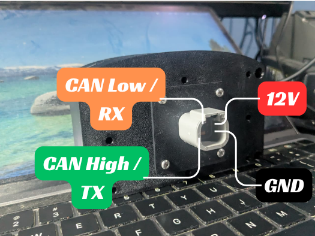
Dash connector side

Cable connector side
| Pin No. | Description |
|---|---|
| 1 | 12V Power Supply |
| 2 | Ground |
| 3 | CAN High / TX |
| 4 | CAN Low / RX |
Note:
- Pins 3 and 4 work as CAN High/CAN Low for rusEFI, Haltech and MaxxECU ECUs (CAN Bus mode).
- For Speeduino ECUs only, pins 3 and 4 work as Serial TX/RX, because Speeduino has no native CAN Bus.
Racedash Pro M4 / M5 / M7¶
This section covers the M4 (4.3"), M5 (5") and M7 (7"). The connector and wiring are exactly the same as described in DTM4 / 4 Pin Connector above.
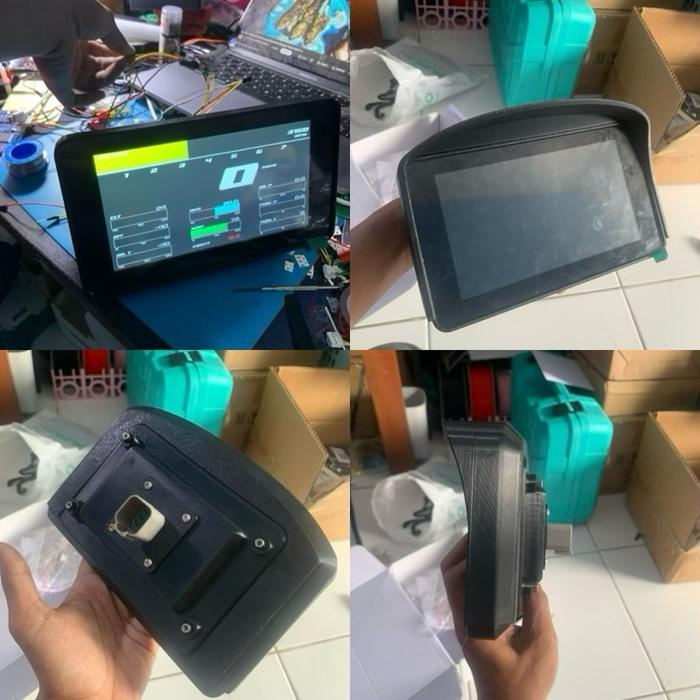
Racedash Pro M7 (7"): front view powered on, front view, rear side with its mount, and side view
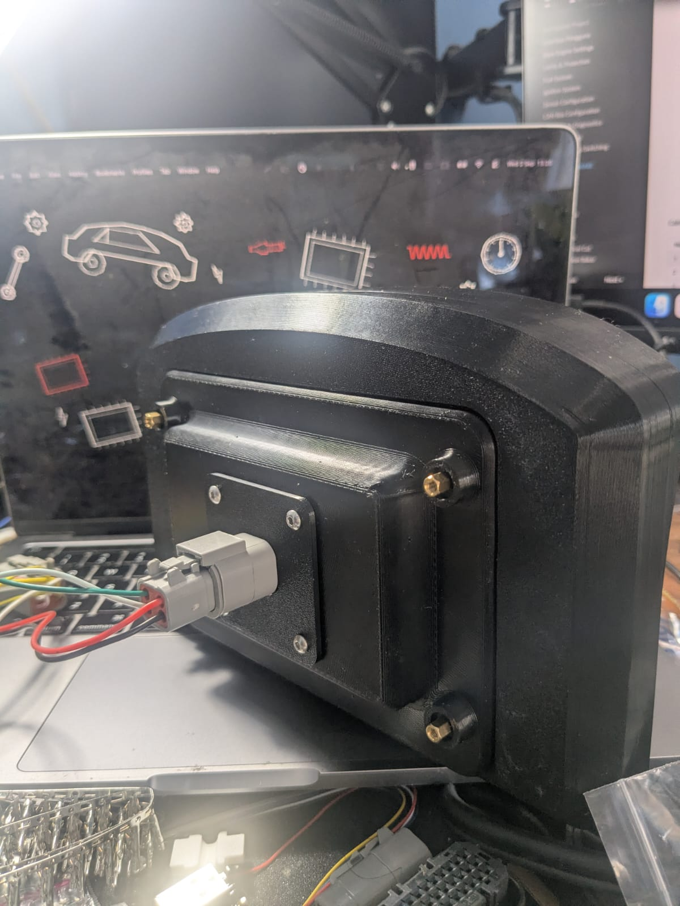
Rear side with the connector fitted
Supported ECUs¶
| ECU | Connection | Notes |
|---|---|---|
| rusEFI | CAN Bus 500 kbps | Most complete data |
| Haltech | CAN Bus 1 Mbps | The only one that sends turn signal, handbrake and tire pressure data |
| MaxxECU | CAN Bus 500 kbps | |
| Speeduino | Serial | Speeduino has no CAN, so pins 3 and 4 are used as TX/RX |
| OBD-II | CAN Bus (ISO 15765-4) | For the car's stock factory ECU, read the limitations |
The ECU type is selected in the DashTune app or in the on-screen menu, and no firmware change is needed. The CAN speed follows the selected ECU automatically.
Besides rusEFI, Haltech, MaxxECU, Speeduino and OBD-II in this table, the Racedash Pro also supports ECUMASTER EMU Black and Link Generic Dash. What has to be enabled on each ECU is covered in ECU Configuration for Racedash.
Data shown for all ECUs: RPM, MAP, TPS, ignition timing, injector duty, AFR/lambda, pressures and temperatures (coolant, oil, fuel, intake air), EGT 1–4, gear, ethanol content and battery voltage.
Note: The turn signal, handbrake and tire pressure lights only come on with Haltech, because only Haltech sends that data. On rusEFI and MaxxECU these three lights will never come on; this is not a fault.
OBD-II Limitations¶
Not every OBD-II car can be read by this dash, and we do not guarantee that your car is one that can. Check the following before buying for OBD-II use.
Only OBD-II over CAN Bus is supported, that is ISO 15765-4 with 11-bit identifiers, at 500 kbps.
Not supported:
| Protocol | Description |
|---|---|
| ISO 9141-2 | K-line, common on older cars |
| ISO 14230-4 (KWP2000) | K-line |
| SAE J1850 PWM / VPW | Common on older American cars |
| ISO 15765-4 29-bit identifier | CAN variant used by some vehicles |
In general, cars built from 2008 onward in many markets already use OBD-II over CAN, but this is not a guarantee: the changeover year differs between brands and countries.
Even when the protocol matches, the data shown depends on what your car responds to. The dash first asks which PIDs are supported, then only reads the ones that are answered. The PIDs read are: RPM, speed, TPS, MAP, coolant temperature, intake air temperature, voltage and oil temperature. Many cars do not answer some of these; oil temperature is among the ones most often unavailable.
OBD-II is also slower than the dedicated CAN protocols of standalone ECUs, because the dash has to ask and then wait for an answer for each value, instead of receiving periodic broadcasts.
Changing the display (template)¶
The dash offers several dashboard displays. To switch, swipe left or right on the top part of the screen (in the RPM bar area). The bottom part of the screen deliberately ignores swipes so that the switches there are not touched by accident.
The last display used is remembered, so when powered on again the dash opens the same display straight away.
Some example displays on the Racedash Pro M7:
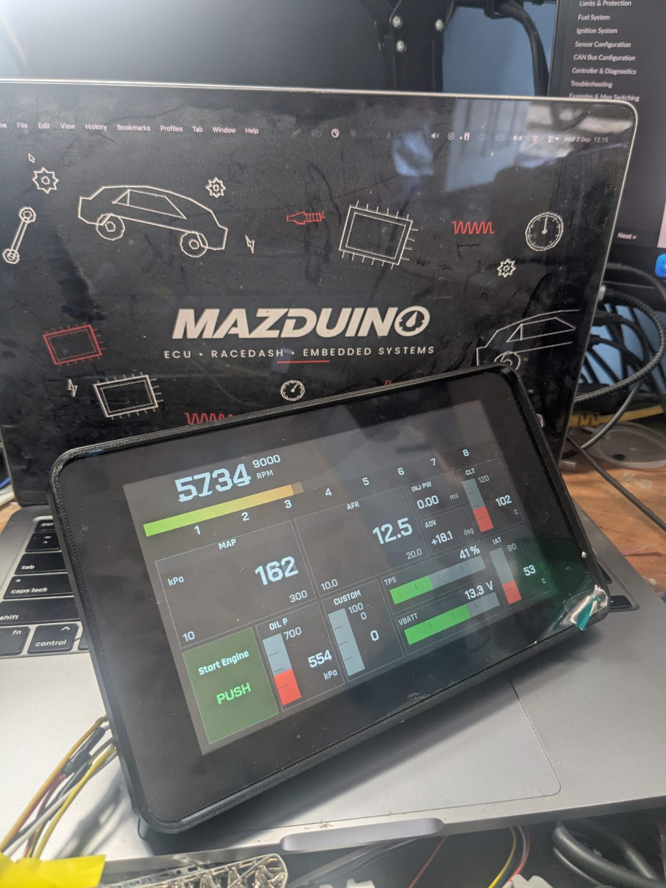
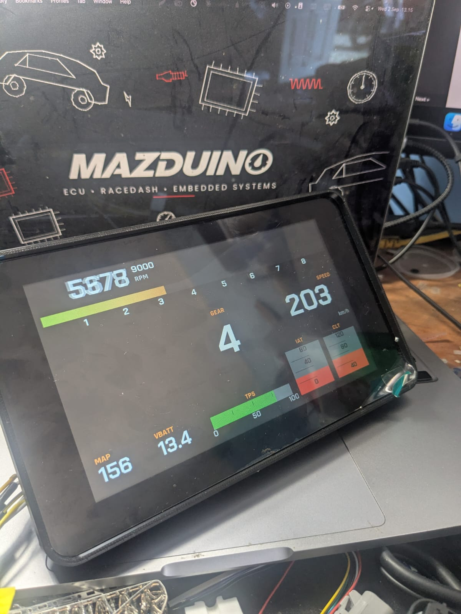
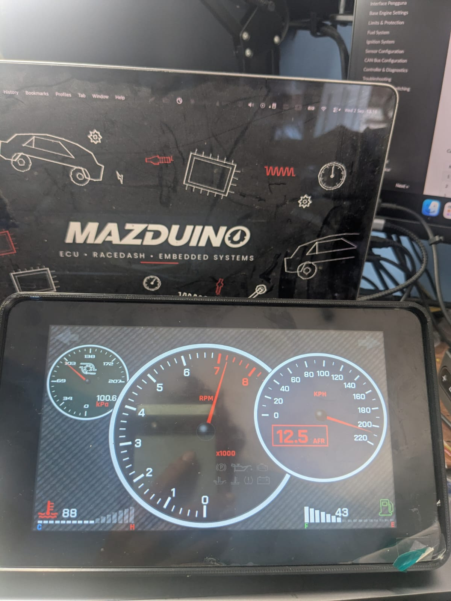
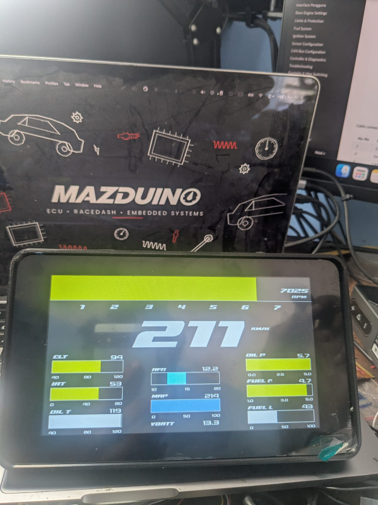
The gauge colors and the content of each panel can be changed, so the display on your dash may differ from the examples above.
On-screen menu (M4 / M5 / M7)¶
Screen gestures¶
| Gesture | Result |
|---|---|
| Swipe left / right on the RPM bar (top part of the screen) | Change the dashboard display |
| Swipe up | Open the Switch Panel |
| Two-finger pinch | Open the main menu |
Swipes are only picked up on the top part of the screen. The bottom part is deliberately left free so that switches placed there are not touched by accident when changing displays.
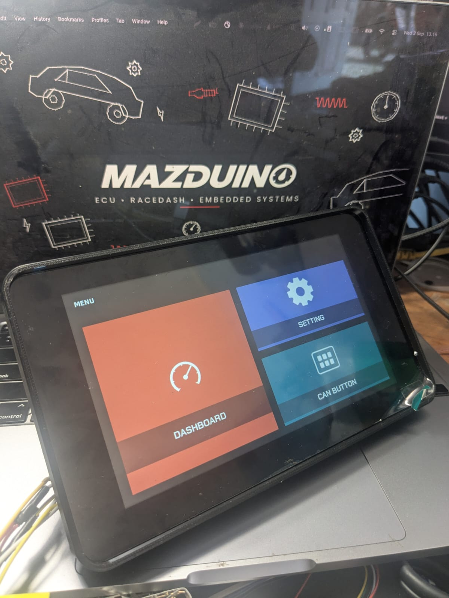
Main menu, opened with a two-finger pinch
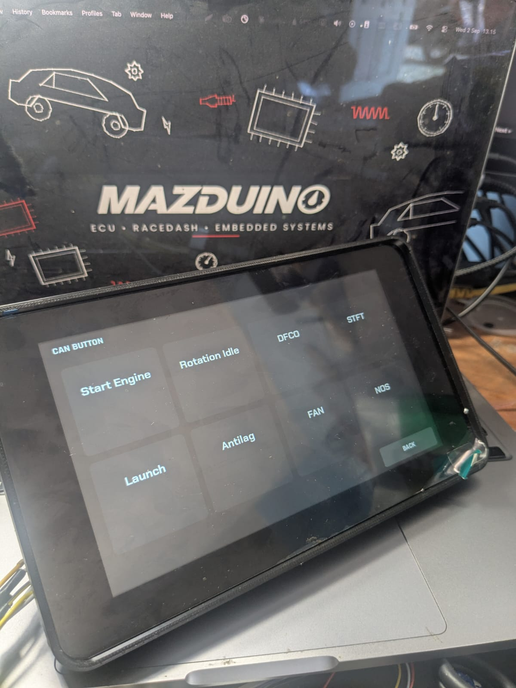
Switch Panel, opened by swiping up
Menu structure¶
Menu
├── Dash → back to the last dashboard
├── Switch Panel → Switch Panel page
└── Setting
├── Display Setting → choose a template, then set the content of each panel
├── General Setting → units, maximum RPM, range of each data item
└── CAN
├── Protocol → choose the ECU type
└── Switch Panel → create and edit switches
Display Setting: setting the content of each template¶
Menu → Setting → Display Setting, then choose the template you want to change (Template 1 to Template 5). The content of each data box on the template can be changed, for example from oil pressure to gearbox temperature, with the left/right arrow buttons.
Press Save to save, or Discard to cancel. The settings are stored on the dash and are not lost when the engine is switched off.
Note for the M7: Template 3 on the M7 has fixed content, so choosing it in Display Setting opens its display directly, not the settings page.
General Setting: units and data ranges¶
Menu → Setting → General Setting:
- Pressure unit: kPa or PSI
- Temperature unit: °C or °F
- Maximum RPM: the full scale of every RPM gauge, adjusted up and down in 250 RPM steps; the redline is set automatically at about 5/6 of this number
- Data Source: a list of all data sources. Choose one to set its minimum and maximum values, which set the gauge range and the min/max numbers printed on the screen
Changes to the units and maximum RPM show up right away on every template.
CAN: ECU type and Switch Panel¶
Menu → Setting → CAN contains two things:
- Protocol: selects the ECU type (rusEFI, Haltech, MaxxECU, Speeduino, OBD-II). The CAN speed adjusts itself. No firmware change and no restart needed: once saved, the dash reads with the new protocol right away.
- Switch Panel: create and edit switches: name, CAN ID and the data that is sent. Switches you create appear on the Switch Panel page.
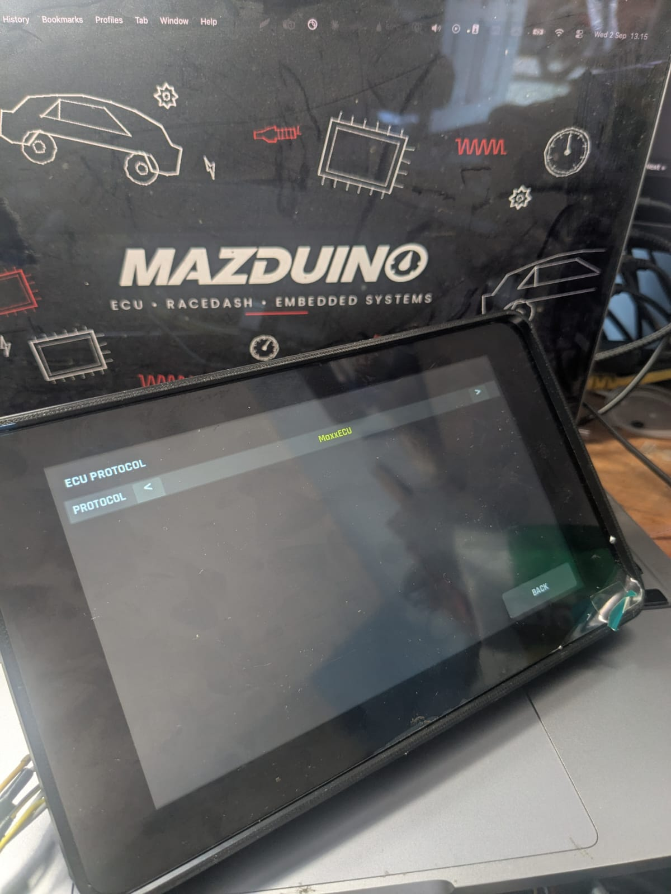
Menu → Setting → CAN → Protocol
Switch Panel¶
Swipe up from the dashboard to open the Switch Panel. This page is used to send commands to the ECU or other devices on the CAN network, for example turning on a fan or nitrous, or triggering launch control, just by pressing a switch on the screen. Press DASHBOARD to go back to the dashboard. The Switch Panel can also be made a tile on the main menu through Setting → Menu.
Switches can be set up on the screen (Setting → CAN → Switch Panel) or in the DashTune app. There are two kinds of switch:
- SWITCH: press once for ON, press again for OFF. While ON, the dash keeps sending the ON command. Formerly called Toggle.
- PUSH: sends the command once each time it is pressed. Formerly called Momentary.
On a Racedash Pro with the latest firmware, each switch has three extra settings. All three are set in DashTune: Switch Panel, then edit the switch.
- Icon: choose from a list of automotive icons, for example engine, fan, nitrous, launch, anti-lag, turbo, lights, horn, A/C and wiper. The icon is shown on the switch card on the dash and in the app.
- Hold to activate: off, 0.5, 1, 2 or 3 seconds. The switch only acts after being pressed for that long; while it is held, a bar fills along the bottom of the card. This setting prevents a switch from being pressed by accident on bumpy roads. Turning off a switch that is ON does not need to be held.
- Stay ON after power-off (SWITCH type only): off by default, meaning every switch starts OFF each time the dash powers on. This is safer for nitrous, anti-lag and launch. Turn this setting on per switch if that switch really should come back ON.
Change for existing owners: before this update, a switch left ON would come back ON after the dash was switched off and on again. Now every switch starts OFF, except switches whose Stay ON after power-off setting is turned on.
Other settings only in DashTune¶
Some settings are not available in the on-screen menu and can only be changed in the app:
- MAP display: Absolute (the number as is, about 101 kPa at idle) or Boost (calculated from the outside air pressure, so under vacuum the number is negative and 0 means no boost yet)
- Splash duration at power-on
- GPS module: only for units that actually have a GPS module fitted
The GPS module is optional and is not included in the unit as sold. The Racedash Pro ships without a GPS module, so this setting does not need to be turned on for a standard unit. The GPS module is only fitted on special request when ordering. Without that module, speed data is still read from the ECU as usual.
The splash and GPS settings only take effect after the dash is switched off and on again.
Indicator lights¶
The warning lights come on automatically:
| Light | Comes on when |
|---|---|
| Check engine | The ECU reports a fault code |
| Battery | Voltage outside 11.5–15.5 V |
| Coolant temperature | Above 105 °C |
| Oil temperature | Above 130 °C |
| Oil pressure | Engine running (above 800 RPM) but pressure below 100 kPa |
| Left/right turn signal, handbrake, tire pressure | Haltech only |
All lights go out if the connection to the ECU is lost, so no light stays on after the ignition key is switched off.
For ECUs other than Haltech, the turn signal, handbrake, high beam and parking light indicators can still be driven from the vehicle's switches by adding the CAN IO Extender.
DashTune App Guide¶
DashTune is an Android app for setting up the dash from your phone. For the Racedash Pro M4/M5/M7, it connects over Bluetooth: no WiFi needed and nothing to unplug.
Getting the app: DashTune is still in testing. Open www.mazduino.com/dashtune/tester on your Android phone and follow the three steps with the same Google account that is active in the Play Store: join the tester group, tap Become a tester, then install DashTune from the Play Store.
If the Play Store shows "Can't download DashTune"¶
This message usually appears right after tapping Install or Update, before the download has started. The cause is in the Play Store on the phone, not in the app.
- Open Settings → Apps → Google Play Store → Storage, then tap Clear cache (not Clear storage).
- Open the Play Store again, find DashTune, and tap Install once more.
- If it still fails, make sure the Google account active in the Play Store (the profile picture at the top right) is the account whose email was registered for DashTune testing. If the phone has several accounts, switch to that one.
- A newly released version is sometimes not ready to download for a few minutes. If the steps above have not worked, wait a moment and try again.
If it still fails, contact support@mazduino.com with your phone model and the email of the Play Store account you are using.
Connecting for the first time¶
- Turn the ignition key on until the dash powers up.
- Open DashTune, go to the Device tab, tap Add Dash.
- Tap Scan. The dash will appear by itself.
- Select that dash. Once connected, the app opens the menu page straight away.
If it is not found: make sure the phone's Bluetooth is on, the dash is powered on, and the dash is not connected to another phone. You can also choose the model manually under Dash model on the same screen.
A dash that has been connected before is remembered, and the app connects by itself the next time it is opened.
DashTune menu contents¶
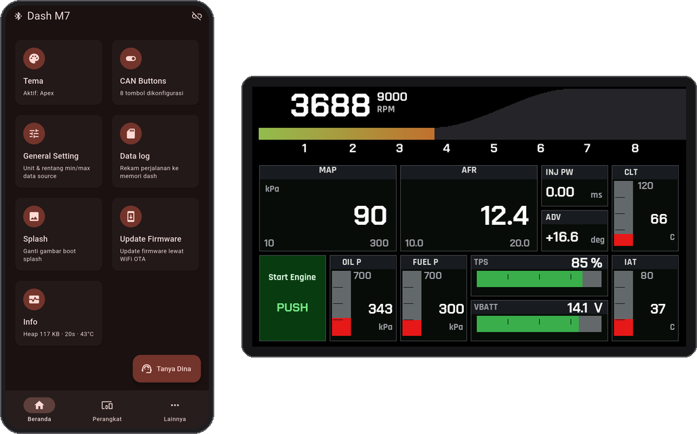
Left: the DashTune home screen while connected to a Racedash Pro M7. Right: the dash screen with the Apex theme.
Order of the menus on the DashTune home screen:
| Menu | Function |
|---|---|
| Themes | Choose the theme shown on the dash and install new themes from the Theme Store. On old firmware this menu is called Dashboard and sets the data shown on each template |
| Switch Panel | Create and set up the switches shown on the dash's Switch Panel. On old firmware this menu is called CAN Buttons |
| General Setting | Units, MAP mode, maximum RPM, range of each data item: the same as the menu on the dash screen |
| Data log | Records trip data to the dash's memory. When the memory is full, the oldest log is deleted. To retrieve logs, the phone connects briefly to the dash's WiFi |
| LED lights | Shift light and indicators, only on dashes that have an LED strip |
| Splash | Create your own opening image (see below) |
| Update Firmware | Updates the dash firmware. At the bottom is WiFi OTA Mode, which turns on the dash's WiFi so it can be reached from a computer |
| Info | Firmware version and device status |
Themes and Theme Store¶
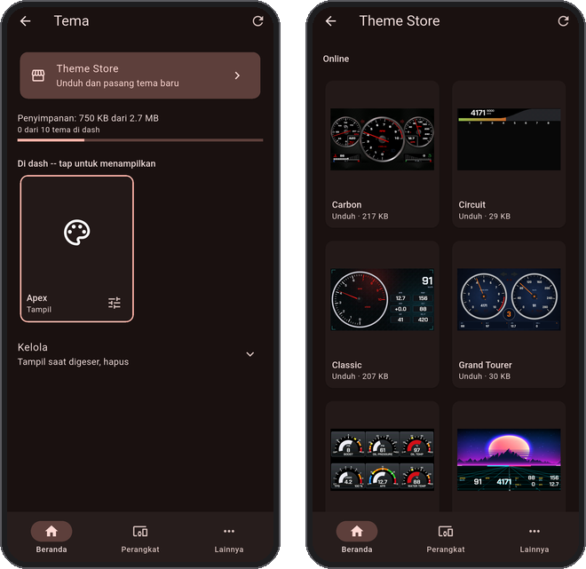
Open Themes to see the themes on the dash and choose the one to show. The Apex theme is always installed by default. Tap Theme Store to see other themes with their previews, then choose a theme and tap Install. During installation the phone briefly joins the dash's Mazduino-Dash WiFi; the dashboard keeps running as usual.
General Setting and Switch Panel¶
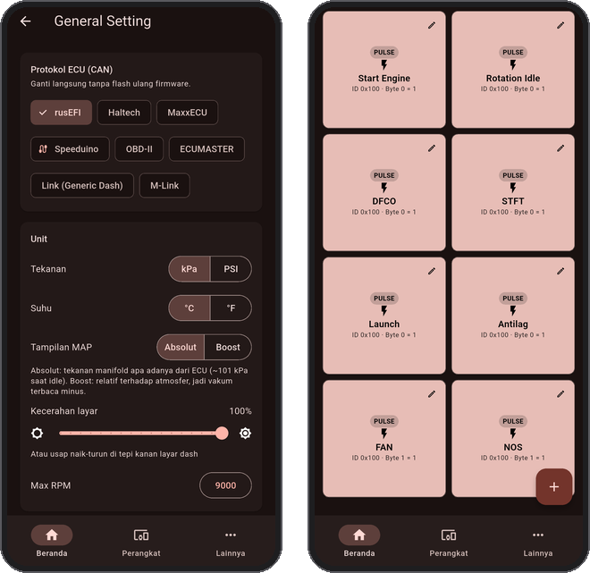
In General Setting, the ECU protocol is changed directly without reflashing the firmware. This is also where you find the pressure and temperature units, MAP mode, screen brightness, Max RPM, the range of each data item, Custom Channels, the fuel level source and the source of each indicator. Switch Panel holds the switches shown on the dash screen; tap the pencil icon to edit a switch, or + to add a new switch. Icon, Hold to activate and Stay ON after power-off are set here (see Switch Panel).
Settings history is in the More → Account tab. It stores the dash settings over time. Check its contents first, then choose the one you want to restore to the dash.
Making your own splash screen¶
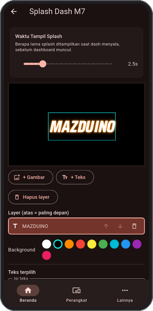
Go to the Splash menu. There you can add images from the gallery, add text, move and resize, then choose the background color. When finished, tap send.
Because the image is sent over WiFi, the dash automatically turns on its own WiFi for a moment, the phone switches to it, the image is sent, then the phone returns to the original network. The process runs by itself: just keep the phone screen on and do not close the app until it finishes.
There is also a splash display duration setting, and a button to delete it and go back to the default image.
If sending the splash fails or the splash disappears¶
On the Racedash Pro M4, M4.1, M5, M5.1, M5.2 and M7 with firmware before 6 November 2026, the dash storage could jam after the splash, template or animation was changed a few times. The M7 Pro is not affected by this problem. Symptoms:
- Sending the splash fails, for example with "connection reset by peer" or "The dash could not save the file".
- The old splash is lost as well, so the dash powers on without an opening image.
How to fix it:
- Update the DashTune app to version 1.2.11 or newer.
- Update the dash firmware through the Update Firmware menu to version 2026-11-06 or newer. The firmware update still works even when sending the splash fails.
- Send the splash again. The first send after the update can take about one minute longer, because the dash tidies up its storage first. Keep the phone screen on and the app open until it finishes.
From that firmware on, the old splash is no longer deleted if sending fails. If the file really is too large, DashTune shows "Not enough room on the dash"; delete unused themes or animations, or shorten the splash, then try again.
If the phone is already on the Mazduino-Dash WiFi but you get "connection timed out" or a message that the dash cannot be reached, first turn off any VPN or ad-blocking app on the phone. Apps like these redirect the connection so it does not reach the dash.
If it still fails, contact support@mazduino.com with the dash model, the firmware version (Setting > About) and the error message shown.
Update firmware¶
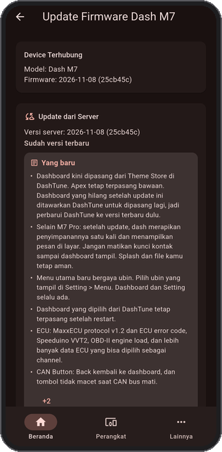
Go to the Update Firmware menu; the app checks for the latest version and shows the version currently installed. If there is a new version, tap the update button.
Warning: Do not update while driving. During the update the dash screen goes off for a while, then comes back on by itself. Make sure the vehicle is in a safe state, the power is not cut, and the app is not closed until it finishes. An update that is interrupted partway can leave the dash unable to start.
Relay features: Google Maps and music¶
DashTune can forward Google Maps directions and the song currently playing on the phone to the dash screen. The settings are in the More → Relay tab.
The dash does not play music. Music is still played from the phone, or from a head unit connected to the phone. The Phone music page on the dash only shows the song title, artist and cover, plus play, pause and skip buttons to control the phone. The PHONE MUSIC tile can be shown through Setting → Menu.
This feature needs notification access permission on the phone, and the app will take you to its settings page the first time it is enabled.
References¶
- Mazduino website - https://www.mazduino.com/
- Mazduino Wiki - https://wiki.mazduino.com/
- Mazduino Github - https://github.com/mazduino/mazduino